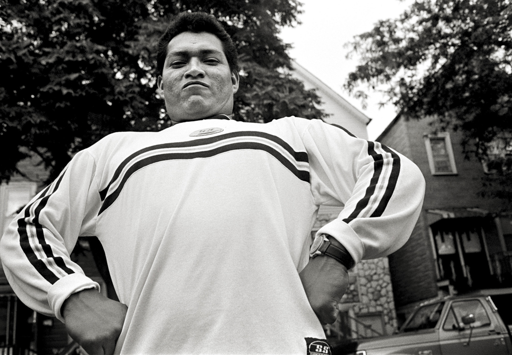
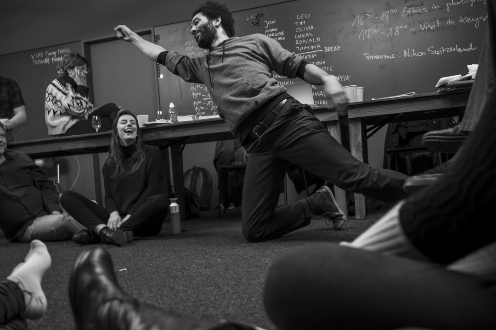
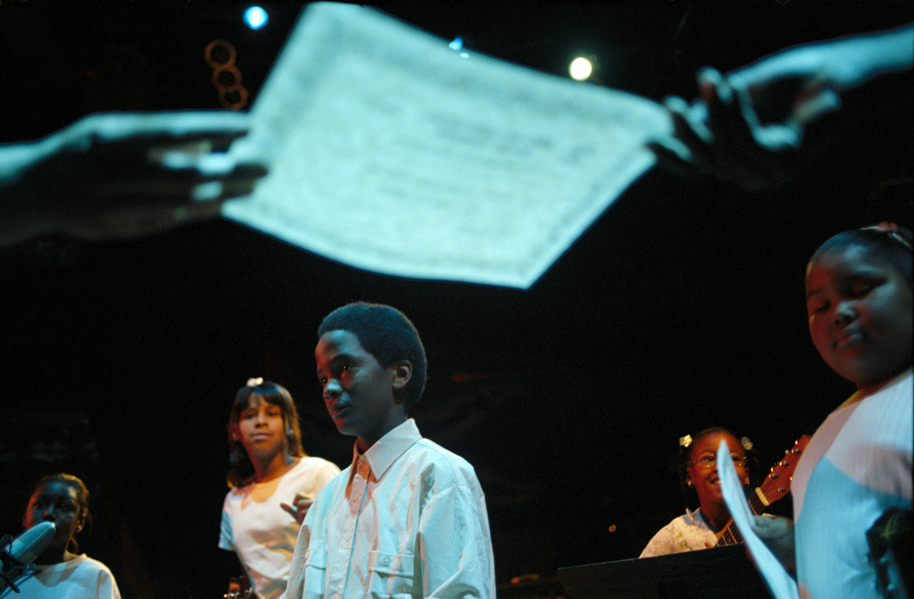
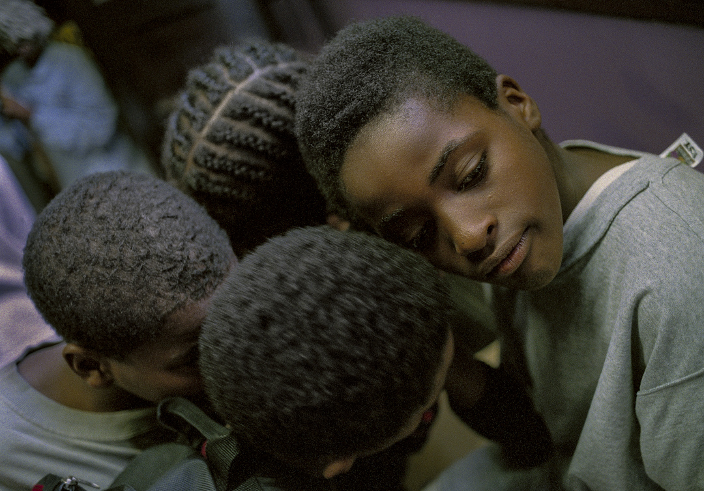

We teach what we practice.
Connect is Artefakt's Fellowship and Academy. Working documentary photographers and filmmakers teach the craft to the next practitioners — not as theory, but as a working discipline. The Fellowship supports emerging artists with time, mentorship, and a platform. The Academy brings masters of the form to Calgary and Chicago for intensive workshops and public lectures.




Apply. Enroll. Attend.
The Fellowship opens its next call for applications in Spring 2026. The Academy season runs Fall through Spring; workshops and lectures are announced as they are confirmed. To receive the call, the season schedule, or to propose a partnership, write to studio@jonlowenstein.com.